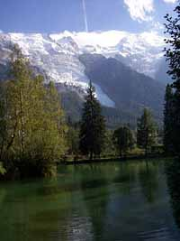

la Jonction (dite aussi Gîte à Balmat - 2589 m)

Départ : le Mont (1150 m)
Aller : 6,4 km, +1439 m, 235 min
Retour : 6,4 km, - 1439 m, 135 min
Difficulté : E
Période : mi juillet - septembre
Remarque : partir tôt en raison de la longueur et de la fréquentation
Bibliographie : Sentiers du Mt Blanc (itinéraires 161, 162).
Monter par les chalets du Mont, du Glacier des Bossons, des Pyramides. Le large sentier balisé et très fréquenté poursuit sa montée vers le Bec du Corbeau qu’il contourne, traverse sous le Mont du Corbeau et rejoint le Gîte à Balmat où bivouaqua le vainqueur de la l'ascension du toit de l’Europe.
Photo : la Jonction, montagne boisée montant vers le mont Blanc (vue du lac des Gaillands à Chamonix).